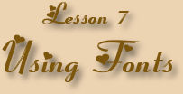
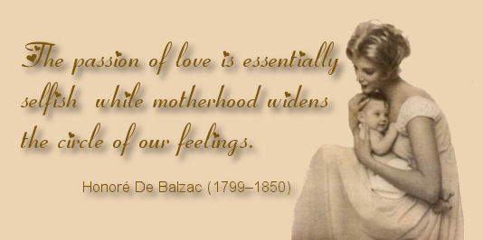

The picture above is from a collection of stock photos that I own.
The picture and the quote are a little bit of early Mother's Day
sentiment, but the true purpose of course, is to show you a third
way to make effective use of fonts.
This time I've used graphics to make sure that you see the fancy
font I wanted to show you in the title and the little quote about
Motherhood. The advantage here is that you can be sure that the
person viewing the page will see the page pretty much as you want
it seen. The disadvantage here is, of course, that the page will
take longer to load than it would have if the page didn't have such
large graphics. In the case of this page, the hit isn't too terrible
for people who are visiting the page with a high-speed connection.
However, if you are using dial-up to view this page, you might notice
a significant delay before the page loads completely.
This is the third part of a lesson on using fonts in a web page
to the best advantage. The first two pages use two methods for making
the page looks as good as it possibly can.
- The first page, Lesson 7, uses fancy
fonts only for the title and buttons.
- The second, Lesson 7b, uses a fancy
font throughout but includes a link to the location where the
font may be downloaded for free.
This page uses fonts to display a block of text but the text was
created as an image using PaintShop Pro X and then the image was
inserted in the page. I've tried to make the pages as different
as I possibly can to make the exercise more interesting to those
who are not taking the web course.
Text and graphics Copyright © 2006, Irene Smith.
All rights reserved. |